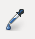
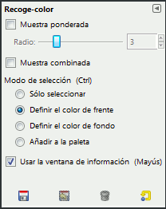

Recoge-color

La herramienta de recoger-color se usa para seleccionar un color de una imagen abierta en la pantalla.
Al pulsar sobre un punto de la imagen, puede cambiar el color activo por el que está situado bajo el puntero.
De manera predeterminada, la herramienta opera sobre la capa activa, pero la opción Muestra combinada le permite
capturar el color como está en la imagen, el resultante de la combinación de todas las capas. Sólo se usan los
colores de las capas visibles. Se abre una Ventana de información cuando pulsa sobre una imagen.
Activar la herramienta
Puede obtener esta herramienta de varias maneras:
En el menú de la imagen a través de Herramientas → Recoge-color.,
o pulsando sobre el icono de la herramienta en la caja de herramientas,
o por medio del atajo de teclado B,
pulsando la tecla Ctrl mientras se usa una herramienta de pintura.
El diálogo de recoge-color no se abre durante esta operación y la herramienta se mantiene sin
cambios después de soltar la tecla. No obstante, puede consultar la información mediante la ventana del puntero.
Tecla modificadora
-Ctrl: Si el modo de selección está ajustado como Definir el color de frente, al pulsar la tecla
Ctrl cambia la herramienta al modo Definir color de fondo. Si el modo de selección está ajustado
como Definir el color de fondo, la tecla cambia la herramienta al modo Definir color de frente.
Cuando el modo de selección es Sólo seleccionar, la tecla no hace nada.
-Mayús: Al presionar la tecla Mayús, y pulsar sobre un píxel, se abre la Ventana de información de recoger-color.
Opciones

Normalmente, las opciones de herramienta se muestran en una ventana unida por debajo a la caja de herramientas,
tan pronto como se activa una herramienta. Si no están, se puede acceder a ellas desde la barra del menú de la
imagen a través de Ventanas → Diálogos empotrables → Opciones de herramienta que abre la ventana de las opciones de
la herramienta seleccionada.